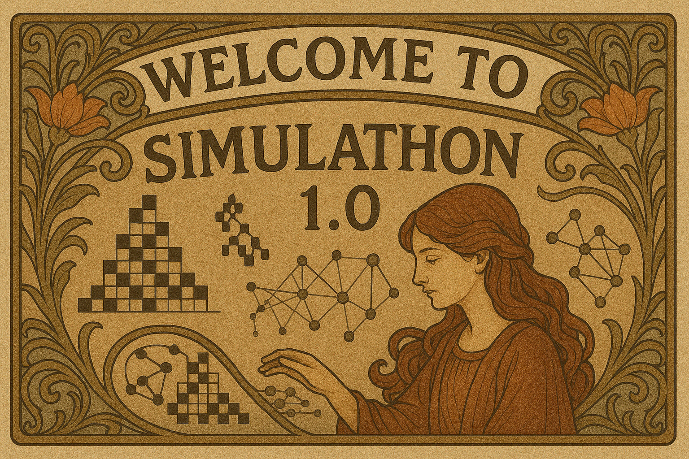
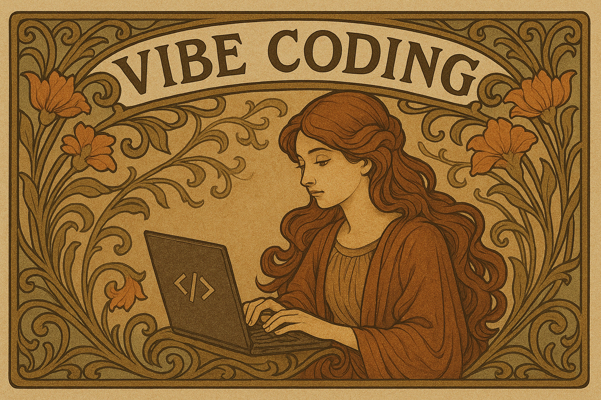

Welcome!
Welcome to the Simulathon 1.0! We’re thrilled to have you here. On this page, you’ll find the key information, resources, and guidelines for the event. Please read through it carefully to ensure a smooth and productive hacking experience.
Let’s build something amazing together! If you have any questions, don’t hesitate to reach out to the organisers.
Vibe Coding:
Vibe coding is a programming approach that relies heavily on AI assistance, where developers describe the desired functionality in natural language and then let an AI generate code based on their instructions. Instead of writing code directly, the programmer focuses on prompting the AI, testing the output, and refining the code as needed.
Project Examples
Participants will build simple simulation applets that explore systems from different fields of physics, math, ecology, game theory, etc. For example, you might simulate gases in a box, create cool patterns using math, model predator-prey interactions, or simulate basic strategy games. The goal is to make complex ideas easy and fun to see in action.
Models to Use:
For this hackathon, you can use any LLM suitable for coding tasks. For practical reasons, we recommend using Google’s Gemini or OpenAI’s GPT family of models. These offer very convenient and easy-to-use web interfaces, multimodal capabilities, and reasonable usability within their free tiers. You can also use Anthropic’s Claude Sonet 3.7. In particular:
- Gemini 2.5 Pro: an excellent model for coding tasks, limited to 25 requests per day for its free tier.
- Gemini 2.5 Flash: good for day-to-day coding tasks, requiring a detailed description of desired targets and limited to 500 requests per day.
Gemini advanced version (no usage limits) is available for a 1 month free trial.
- GPT4o: very good for coding tasks, with usage limits subject to server traffic and daily requests (details not specified).
- GPT4o-mini: good for coding tasks, comparable to Gemini 2.5 Flash. It becomes the default model once the usage limits for GPT4o are reached.
- Claude Sonet 3.7: excellent for coding (community favourite), although free tier limits (context window and requests per day) are unclear.
To ensure the best workflow, you can:
- Use the “lite” models (Flash and Mini) to explore and prototype concepts without consuming the usage limits of the full models.
- Switch to the full models for proper development of the app.
- Alternatively, you can get a 1 month free trial of Gemini 2.5 Pro (by creating a dummy Google account for a 1 month trial).
Requirements:
- GitHub account.
- Either Gemini, ChatGPT, or Anthropic free account (or access to any other LLM suitable for coding). Ideally, obtain all three.
Workflow:
Projects should be developed in JavaScript or any other language that can run on a web browser (e.g. the PyScript module allows Python to run on a web browser). Any LLM mentioned above will be able to handle this without any problem. For app development, we encourage a 3 phase workflow.
Planning:
- Choose a model to develop.
-
Think about the features of the app. These should include:
- The system itself to be simulated,
- Input parameters and Widgets to control the behaviour of the system,
- Relevant metrics to visualize for exploring the behaviour of the system.
Development:
- Build the app iteratively, adding functionality and components piece by piece.
- Create a prompt describing with detail and precision everything that needs to be implemented in a given iteration.
- Specify to the model that the output must be coded in JavaScript.
- Copy the output of the model and save it in a file called index.html.
- Double-click on that file to run it in your web browser.
-
If the project grows larger, it is convenient to split the file into 3 files:
index.htmlfor the web components,styles.cssfor the aesthetics,script.jsfor the logic.
- Repeat these steps until the applet is considered complete.
Hosting the applet:
- Once done, upload to a GitHub repository.
-
Configure GitHub Pages for that repository:
- Go to Settings/Pages.
- In Build and Deployment, select Branch "main".
Try to be creative! Feel free to explore systems beyond traditional physics. You can draw inspiration from ecology, game theory, economics, maths, etc. It is easier to create simple systems with well-defined and easily described rules than to build systems that involve complicated physical algorithms.
Rules:
- Participants can submit as many applets as they want.
- Applets can be created entirely through Vibe Coding, as well as through manual coding or hacking of output code.
- Applets should be presented as a web page.
- Applets that do not run will be disqualified.
- Participants will present one applet in a 5–10 minute presentation on the second day of the hackathon.
Deliverables:
The finalized applets must be sent to simulathon@gmail.com before April 27th at 17:00. Each submission must contain:
- Applet name,
- Names of participants,
- Applet icon,
- Link to the page where the applet is hosted,
- Link to the GitHub repository.